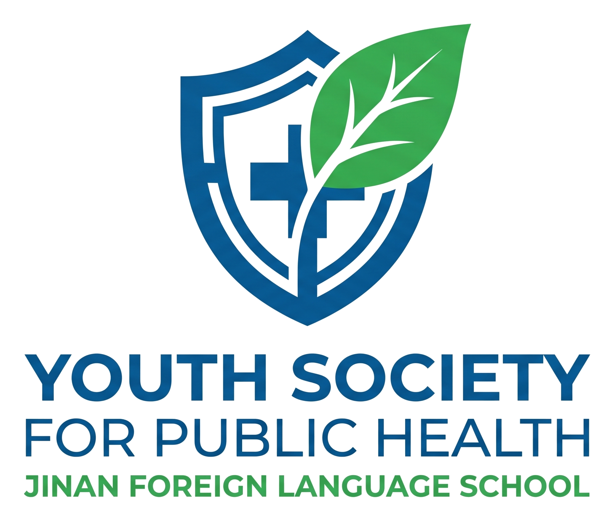

认识结核病
用短句、图解和问答解释结核病是什么。

YSPH-JNFLS
济南外国语学校青年公共卫生学会
YSPH-JNFLS 是济南外国语学校的学生公共卫生学术社团，关注结核病防治、健康传播、研究实践与社区行动。
我们希望网站第一眼先呈现公共健康议题：什么是结核病、如何预防、如何科学看待患者、青年可以怎样参与。团队介绍放在其后，说明是谁在推动这些行动。
我们也是中国科协下设中国防痨协会认证的防痨小屋，帮助在校园和社区中传播准确、清楚、有温度的结核病知识。
新版网站会把防痨小屋设计成清楚的传播路径，而不只是一个头衔。每一块内容都应该回答一个具体问题，让读者更快理解、更愿意行动。
用短句、图解和问答解释结核病是什么。
把传播、筛查、通风、规范治疗讲成日常语言。
让防护更科学，让支持更有温度。
通过健康微光、课堂活动和社区合作传播公共健康知识。
Executive Group / 创立 YSPH-JNFLS，发起健康微光项目，统筹学会方向、结核病科普、公共健康倡议与外部合作。
Outreach Group / 负责山区健康教育、课程材料与现场记录。
Prevention Group / 负责结核病科普内容、校园宣传与反污名表达。
Research Group / 负责阅读小组、问卷设计、资料整理与短报告写作。
Partnership Group / 负责老师、家庭、社区与合作方沟通。
Publication Group / 负责图文设计、科普材料、报告排版与网站更新。